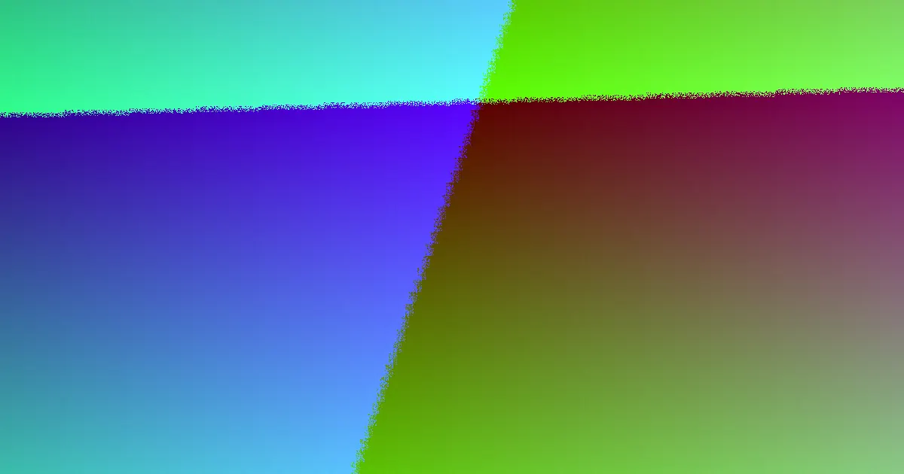

Red flags in retaining wall quotes brisbane responses usually show up as vague scope, missing drainage or removal lines, and allowances that sit outside the published brackets. The source guide cites seven wall systems, eight approval pathways and three planning bands, with professional and approval allowances of A$1,200 to A$3,500 for ordinary planning and A$3,000 to A$8,000 for complex planning. Treat those as preparation brackets and query any quote that hides assumptions rather than stating them.
For local buyers, retaining wall quotes brisbane red flags here is what to challenge before you accept a figure.
Retaining Wall Quotes Brisbane Red Flags Explained
A quote response should make the job easier to audit, not harder. The source material behind Retaining Wall Quotes Brisbane What to Expect: 2026 Guide points to a quote checklist and an inclusions checker, which tells you the comparison must go past the headline number. Watch for these warning signs:
- The project type is never stated, so a repair price sits beside a new build price.
- No wall system is named, leaving you guessing what was actually priced.
- Drainage, removal or access limits appear nowhere in the inclusions.
- The allowance stance is silent, so provisional costs could surface later.
- Only fence height is recorded instead of retained height and wall length.
- Site slope and machinery access are not mentioned at all.
- Next steps, inspections and approvals are missing from the response.
A quote that reads clearly on all seven points is far easier to compare than a cheaper one that stays vague.
Quotes that hide the wall system behind one figure
The material guide groups options as poured concrete sleepers, cast in place concrete, timber, masonry blocks or brick, sandstone or other stone, gabion baskets, and machine placed rock or boulders. That list is your audit tool. If two responses both say wall supplied and installed but one assumes posts and panels while the other assumes gabion baskets, the prices describe different structures.
Ask each responding tradesperson which system their figure assumes, what base or footing sits behind it, and whether the material choice is final or still open. Naming the system forces like for like comparison and exposes any quote built on a guessed specification that would later need to be unwound.
Allowance figures outside the published brackets
The source calculator lets a homeowner leave professional and approval allowance out entirely, set it at A$1,200 to A$3,500 for ordinary allowance planning, or set it at A$3,000 to A$8,000 for complex allowance planning. Those published choices are guardrails, not promises for any specific block.
A red flag appears when a response ignores the allowance question altogether, or when engineering and approval work is folded invisibly into labour. ASIC Moneysmart's renovating guidance supports setting a budget method and keeping cost control visible before work starts, and the same habit applies here. If a figure looks unusually low, ask what was excluded rather than assuming you found a bargain.
Drainage, access and removal left as loose ends
The measurable inputs in the source material are wall length, average retained height, wall system, site access, working slope, removal of any existing wall and the allowance stance. Each one can move labour, equipment and approvals. A quote that prices only the visible finish while staying quiet on where water goes after rain is narrowing the scope to win the job.
Boundary position is another open question. The source navigation raises boundary walls and neighbours, engineering and approvals, when an engineer is needed, approval costs, drainage problems, repair or replace, and signs of failure. None of these should be settled from a quick photo. Treat each as a question to resolve with the contractor and the relevant authority.
Who this checklist applies to
This angle suits an owner planning a first wall, replacing an ageing one, seeking a repair opinion, or collecting notes before a contractor visit. It also fits where a wall may sit near a boundary, where drainage has caused concern, or where failure signs make engineering questions sensible. Brisbane readers should state their location early, because the source separates Queensland guidance from other states and territories and treats Brisbane as a priority city, so pathway selection depends on place.
- Name the job type. Choose one category from new wall, replacement, repair, assessment or planning only and write it at the top of the brief.
- Record site facts. Note retained height, length, machinery access, slope, drainage observations, boundary concerns and any wall to remove.
- Ask for the system. Request that each response names the wall system it assumes and the footing behind the figure.
- Compare in one grid. Place each response beside the same checks so price differences explain themselves.
| Warning sign | Why it matters | Stronger response |
|---|---|---|
| Project type not stated | Different categories carry different scope and risk | New wall, replacement, repair, assessment or planning only named at the top |
| No wall system named | Unlike prices get treated as if they were equal | System, base or footing assumption written into the quote |
| Drainage or removal absent | Hidden items can surface as variations later | Drainage, removal and access shown as visible lines |
| Allowance stance silent | Provisional cost stays invisible until work starts | Excluded, ordinary or complex allowance stated in plain terms |
| Only fence height recorded | Understates the retained load on the wall | Retained height, length, slope and access all measured |
Common questions
Is a low Brisbane retaining wall quote a red flag on its own? Not automatically. A low figure becomes a concern when the quote stays silent on drainage, removal, access or the allowance stance. Ask what is included, excluded and provisional before judging any number.
Do I need to pick a material before requesting quotes? No. The source material expressly allows an unsure material choice. Saying undecided is safer than forcing a guessed specification, then ask which of the seven systems each response assumes and why it suits the block.
Are the published allowance brackets fixed approval costs? No. The source presents A$1,200 to A$3,500 as an ordinary professional and approval allowance and A$3,000 to A$8,000 for complex allowance planning. Both are preparation brackets, not fixed contractor prices.
An independent guide to spotting weak retaining wall quote responses in Brisbane, grounded in the parent quote planning material and public renovating guidance.